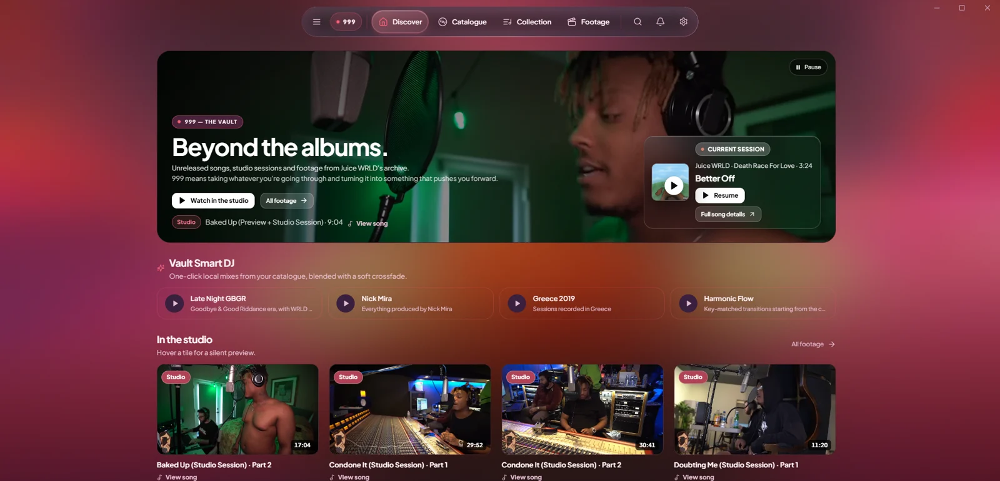

Latest Release · v2.7.0
Unreleased Glass
Liquid Glass desktop music player for Juice WRLD's released & unreleased catalog — synced lyrics, studio footage, 999 FM, and 60 fps Clip Studio.
Download for Windows
Windows
Installer (.exe)
macOS (Apple Silicon)
M1 / M2 / M3 / M4 (.dmg)
macOS (Intel)
Intel Mac (.dmg)
Linux
AppImage (x64)
Windows may show "Windows protected your PC" (the installer is free and unsigned): click More info → Run anyway. To check the file, compare Get-FileHash .\file.exe -Algorithm SHA256 with the SHA-256 in the release notes (listed from 2.7.1).
